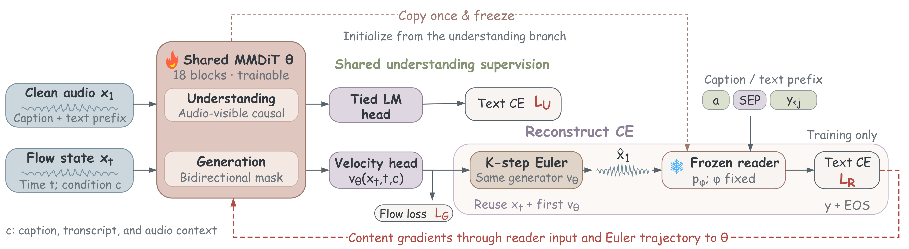

01
叶尔斯塔湾的天鹅，假称喜欢吃止痛药。
We connect speech understanding to generation through shared learning and latent reconstruction feedback. Shared text prediction provides linguistic supervision, while a frozen latent reader supplies transcript feedback to reconstructed speech. Both paths support content-faithful generation without changing generation-time decoding.

叶尔斯塔湾的天鹅，假称喜欢吃止痛药。
薇拉吸食大麻后情绪失控，竟威胁女儿的男友，要被杀死还是被割鸟。
如果您不愿意开刀的话，那就只能使用缓慢排水法。
二条城建筑引人，秋冬季节枫树和银杏转红，秋色更叫人迷醉。
尾号三九二六的乘客刚夸了你，爆竹声中一岁除，中点赞中国好师傅。
Secondly, there is a difference between a major tone and a minor tone.
At least five species of reptiles have been recorded for the island.
Rooftop Mounted for homes with no attics.
The elevator shaft opens to a destroyed Victorian house in a similarly destroyed city.
Using his engineering knowledge, Gallagher studied leverage, and how it applied to wrestling.